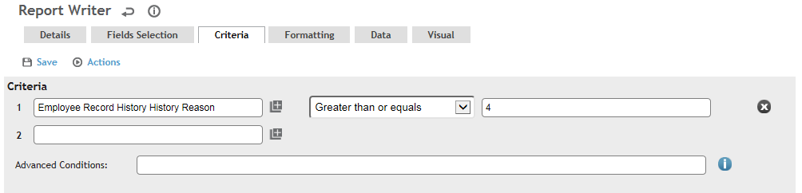

To report on Employee records that are in the Ready to Purge state:
Create a Report Writer report with the Employee Record History entity, and add the criteria you require. To report on the records that are ready to purge, you will need to add the Employee Record History Reason and make it greater than 4 (for ReadyToPurge).

For more specific information on creating Report Writer reports, see the Cority User Guide.
Run your report. The report will list the records that are in the Ready to Purge state.